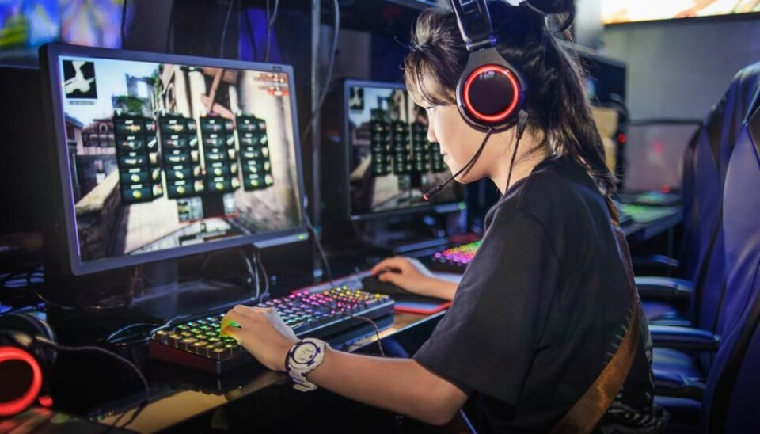
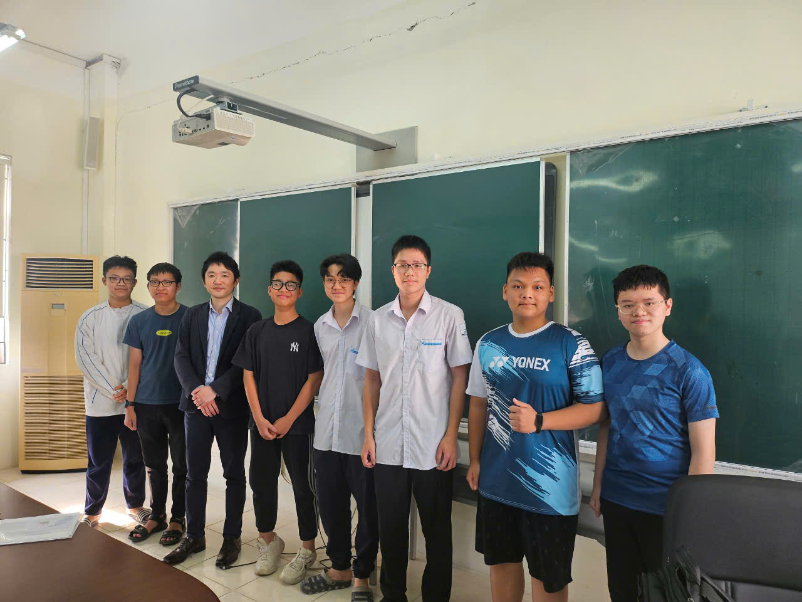

High School Tales
 Let us start the tale at the end of the Dark Ages, when every electronic device was out of sight and locked with passwords that I did not know. I was still not over games though, playing secretly at school. I will omit the extreme cases of my misgivings, just understand that it was extreme. Now, when I look back on it, I do not remember what I played back then, emphasizing how pointless it was.As seen in history, the thing that snapped me out of it was a destructive rejection. With it, I went back to studying properly and got past the brutal entrance exam to HSGS.
After entering the school, my main focus was getting into the pre-Olympiad classes for Informatics. This meant I needed to get a decent understanding of basic C++. We had to do problems on a website called "Codefun", which is a massive problemset database with about 450 problems to do. If you did more than 300 problems, you're in. After a month, I and about 70 more entered the pre-Olympiad class.
The class focused completely on Competitive Programming, which meant we did not need to study any other subject, which is a needed advantage, as the problems we would face in the class were very difficult. We learned about different algorithms and data structures and implemented them into problems. Every week or so, there would be a small test, known as LAH (in Vietnamese, so I can't translate it), just to see where we were in the class and how we were getting on.
Aside from Competitive Programming, we also did a bit of English, translating a book on Blockchain from English to Vietnamese. I did 3 out of the 25 chapters and fixed a lot of the Latex code that we were working with. It was very fun.
Back to Competitive Programming, my proudest achievement would probably be the Northern Informatics Olympiad (NIO). It was an Olympiad hosted for 15 and 16 years old students for those in the Northern part of Vietnam. We did 3 LAH back-to-back to determine those who would be going, with the better scores going into the 16-year-old division. Out of the 7 that were chosen, I got the highest score out of all the 15 years old in the 15-year-old division. I remember being very shocked about it and gloating for a while afterward.
 While being in the pre-Olympiad class, I was also in the school ambassador group. This meant I met and interacted with a lot of delegations from different universities. This drastically improved my English and expanded my horizons past Vietnamese education. The picture on the side is a picture of the team meeting the Japanese.
At the end of the class, algorithms and data structures were becoming so ridiculously complicated that I struggled to even understand the concept, much less start to code them. It was then that I decided I did not want to spend my next year just banging my head against the screen trying to solve these problems. So I reviewed the stuff that I know well enough to guarantee being in the top 35. See, the top 35 would get instant admission to one of the best IT universities in Hanoi. After getting top 16, I switched over to focusing on English.
After the SAT and TOEFL, I eventually decided to set my sights on SETU, being in an English-speaking EU country, while being more affordable than Dublin or Cork. All that was left was to prepare the necessary documents.